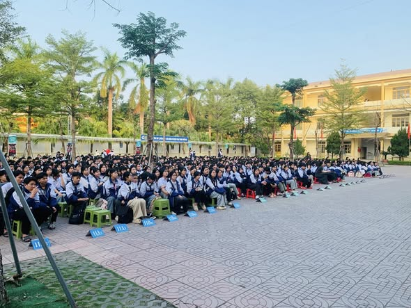

Một số hình ảnh trong công tác tuyển sinh của nhà trường.
Hoạt động tư vấn tuyển sinh giúp học sinh hiểu rõ hơn về môi trường học tập tại trường.

Công tác tiếp nhận hồ sơ được tổ chức khoa học, tạo điều kiện thuận lợi cho học sinh và phụ huynh.